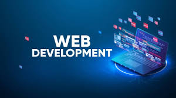

I am Jayden, learning about web development. This blog explains my journey of how I become a web developer. This is a long but fun journey, with many exciting things that happened.
It all started when I planned to go to a summer camp on 2023. They offered a Python course. I didn't know what Python was, other than being a snake. I quickly found out on google that it was a programming language, which meant that I was going to learn how to code. I thought about it, and I decided to give it a try. That Python course taught me the basics of Python, and I loved it.
So, what does this have to do with web development? Python is more associated with Artifical Intellegence and data anaylsis, and even though its frameworks Flask and Django are for web development, Python is not the first language most people think about when they talk about web development (HTML, CSS, and JavaScript come to mind first.) But learning how to code the first time inspired me to get a job related to programming.
It didn't take me long to figure out how much you can do with programming, like creating websites, games, and much more. But why did I choose web development? Think about how websites play a crucial role in people's lives. I think there's not many people who never been on a website (If you are reading this, you are on a website.) Web developers are also in demand as well.
I knew that the core languages of web development are HTML, CSS, and JavaScript. I found a website called W3Schools, and I read through the tutorials for the corresponding languages and tested out the examples. From my past experience from Python, I knew that just reading was not enough, so I went on freeCodeCamp. They taught me more about HTML and CSS and guided me to build websites step by step. They also gave me assignments I had to do on own.
Now that I learned the basics of HTML, CSS, and JavaScript, I also need to learn CSS and JavaScript frameworks. First, I wanted to focus on a CSS framework. I decided to use bootstrap because it was very easy to use. I quickly picked up on it and saw how powerful it was.
For JavaScript, choosing a framework/library was more difficult because there were more options to choose from. For the frontend, I chose jQuery because I like how easily it can manipulate the DOM. For the backend, Node.js was the obvious choice because of how powerful it is.